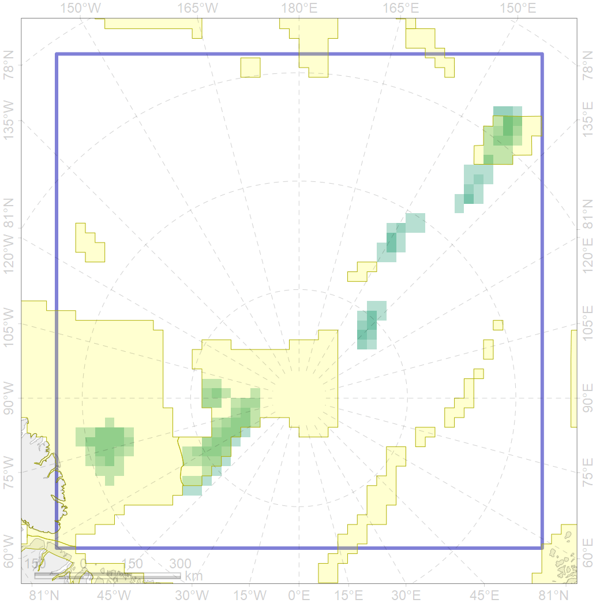
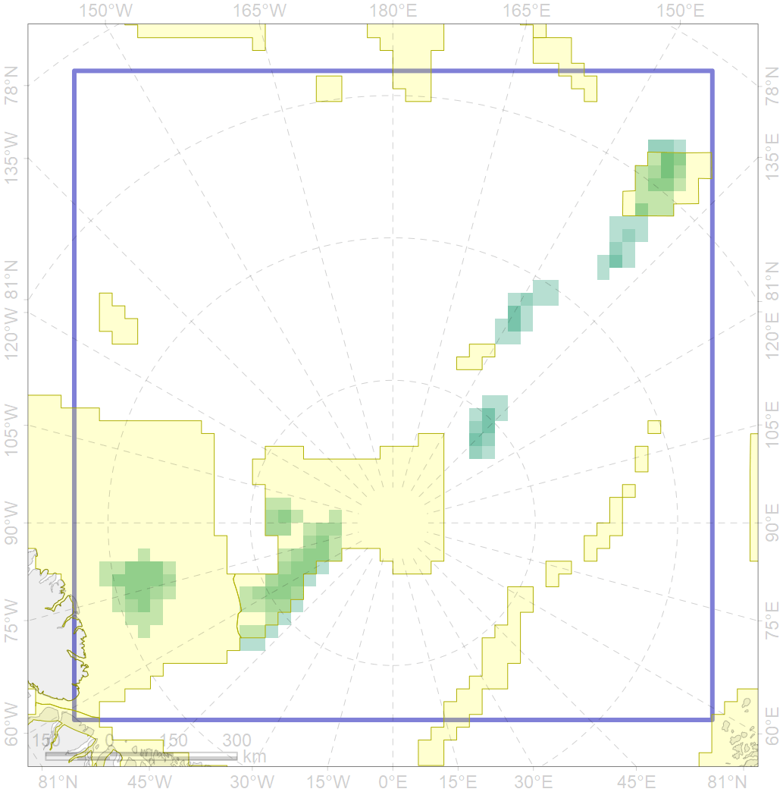

7197
 

| CF code | 7197 |
| CF name | VI.3.2. Terraces |
| Time Period | At least last 100 years |
| Source(s) | Harris et al., 2014; Carmack, Wassmann, 2006 |
| Seasonality | 1-12 |
| Depth Horizon | Sea floor |
| Methodology | Data obtained from the literature |
| Use Restrictions | Open access |
| Author Name | V. Spiridonov, W. Merritt |
| Notes | |
| Scenario’s Target | 0.4349998 |
| Target Achievement | 0.614 (Scenario: 141.2%) |
| PAC | Share of the Total Amount within the PAC | Share of the Target Achievement for the ArcNet | PAC’s Contribution to the Target Achievement |
|---|---|---|---|
| 54 | 24.7%25.0% | 56.8%57.5% | 40.3%40.7% |
| 55 | 33.6%33.6% | 53.7%53.8% | 38.1%38.1% |
| 82 | 15.6%18.0% | 22.6%24.1% | 16.0%17.1% |
| inner | 73.9%76.7% | 133.2%135.4% | 94.3%95.9% |
| outer | 26.1%30.1% | 8.0%13.0% | 5.7%9.2% |
| † supplement values are for area consistence whereas principal values are for Accenter compatible gridded stats |